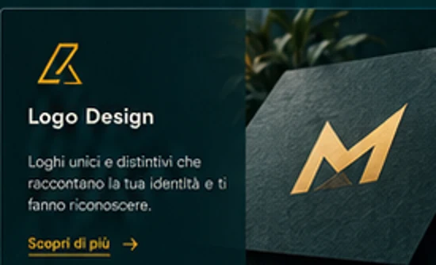
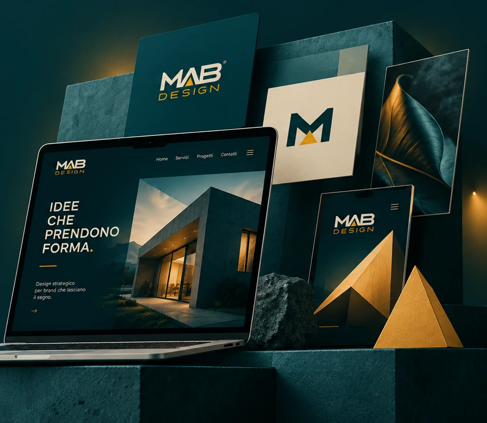
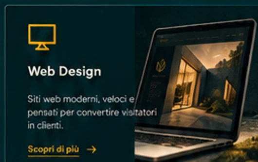
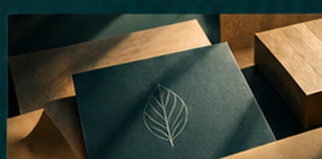
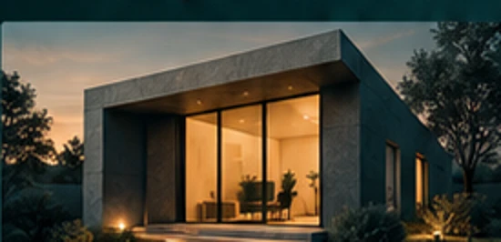
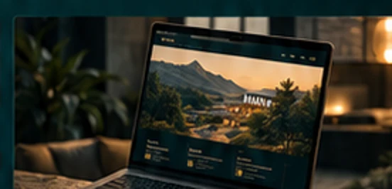
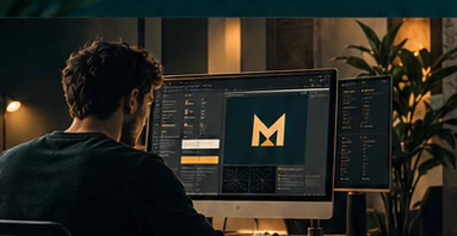

Logo Design
Loghi unici e distintivi che raccontano la tua identità e ti fanno riconoscere.
Scopri di più ↗
Creo siti web, loghi e identità visive riconoscibili. Sviluppo anche software gestionali e applicazioni web su misura, partendo dalle esigenze concrete di chi li utilizza.

Dal sito vetrina all’identità visiva, fino allo sviluppo di strumenti gestionali: un approccio personale per creare soluzioni chiare, riconoscibili e utili nel lavoro quotidiano.
Loghi unici e distintivi che raccontano la tua identità e ti fanno riconoscere.
Scopri di più ↗
Realizzazione siti web responsive e chiari, pensati per raccontare attività e servizi.
Siti web su misura ↗
Sistemi visivi coerenti e professionali per una presenza di brand forte e riconoscibile.
Scopri di più ↗
Non soltanto siti web: realizzo interfacce e applicazioni gestionali su misura. Il progetto DepoTrack nasce per la gestione delle flotte autobus e mostra come rendere più leggibili mezzi, stati, posizioni e flussi operativi.
Progetti realmente sviluppati: dal sito di Al Ritrovo, pizzeria a Paullo (MI), a un ecosistema software per la gestione delle flotte. Le interfacce operative vengono mostrate soltanto con dati dimostrativi inventati.
 WEB DESIGN · IDENTITÀ VISIVA
WEB DESIGN · IDENTITÀ VISIVAUn sito per raccontare l’identità e le specialità di una pizzeria: immagini, contenuti e un’esperienza di navigazione pensata per far conoscere il locale.
Visita il sitoUn ecosistema per la gestione operativa di flotte autobus e depositi: software su misura, organizzazione degli stalli e visualizzazione delle informazioni. La demo pubblica contiene esclusivamente dati inventati.
Esplora la demo sicuraStudi visivi indipendenti: non sono lavori commissionati.

Brand & Site Web · studio concettuale
Brand Identity · studio concettuale

Web Design · studio concettuale
Un percorso semplice e strutturato per trasformare la tua idea in un progetto concreto e di valore.
Ascolto le tue esigenze, il mercato e i tuoi obiettivi.
Definiamo il concept e la direzione creativa.
Do vita al progetto con cura, attenzione e soluzioni su misura.
Ricevi materiali pronti all'uso e indicazioni essenziali.

MAB DESIGN nasce dall’unione tra progettazione visiva e sviluppo web. Dai siti per attività locali ai software gestionali per organizzare il lavoro, ogni progetto parte da un problema reale e da una soluzione concreta.
Raccontami la tua idea ↗◇ Approccio strategico
✎ Design su misura
◭ Comunicazione chiara
◉ Risultati concreti
Hai un'idea in mente o vuoi dare nuova vita al tuo brand? Raccontami cosa vorresti realizzare.